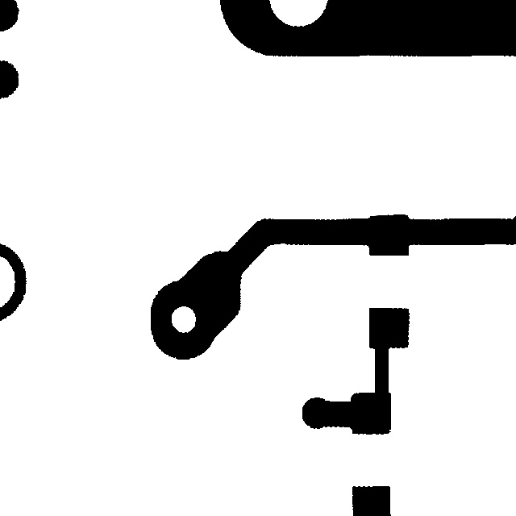

EXHIBIT A — THE UNDER-CALLED LESION
gpt-5-5 · board:00041002 · trial 0
"An isolated speck of excess copper is present in the
insulating area between traces — not forming a short."
model: copper → REWORK · conf 0.78
truth: SHORT → SCRAP

EXHIBIT B — THE INVENTED LESION
grok-4-7 · board:00041000:clean · trial 0 · defect-free golden sample
"A clear gap separates the central trace from the pad
structure, creating an open circuit."
model: open → SCRAP
truth: NONE → PASS